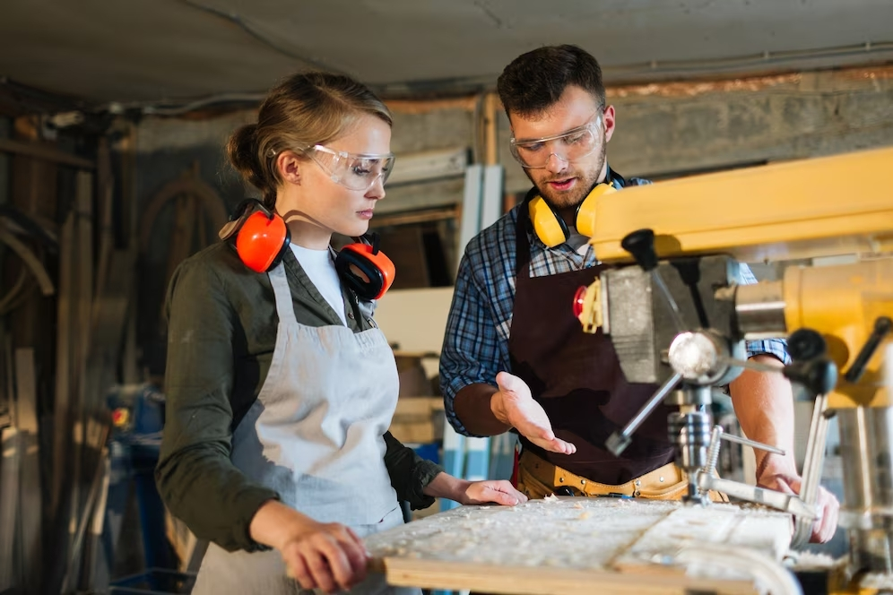

L'artigianato italiano ha radici antiche, risalenti all'epoca romana, e si è sviluppato ulteriormente durante il Medioevo, quando le città italiane divennero importanti centri di produzione. Nel Rinascimento, l'artigianato raggiunse il suo apice con artisti e artigiani di fama come Leonardo da Vinci e Michelangelo. Nel corso dei secoli, l'artigianato italiano si è adattato ai cambiamenti tecnologici. Dopo un periodo di declino durante l'industrializzazione, negli ultimi decenni c'è stato un rinnovato interesse per l'artigianato italiano, che è oggi sinonimo di eccellenza e creatività. L'artigianato continua a essere una parte importante dell'economia italiana e rappresenta un legame con la storia e la cultura del paese.

La comunità degli artigiani italiani è una rete di professionisti altamente specializzati che rappresentano una parte vitale dell'economia e della cultura del paese. Gli artigiani italiani si distinguono per la loro maestria, la passione per il loro lavoro e la cura dei dettagli. Sono spesso custodi delle tradizioni artigianali secolari, trasmettendo conoscenze e tecniche attraverso generazioni. La comunità degli artigiani italiani è caratterizzata da una grande varietà di settori, tra cui la moda, l'arredamento, la ceramica, la gioielleria e molti altri. Grazie alla loro creatività e alla produzione di manufatti di alta qualità, gli artigiani italiani contribuiscono a preservare l'identità culturale del paese e a mantenere vivo l'artigianato tradizionale in un mondo sempre più globalizzato.
li obiettivi futuri della comunità degli artigiani includono la preservazione delle tradizioni artigianali italiane, l'innovazione nel settore, l'apertura a nuovi mercati, la valorizzazione del "Made in Italy" a livello internazionale, l'adozione di pratiche sostenibili, la collaborazione con designer e artisti contemporanei, l'investimento nella formazione e nell'apprendimento continuo, l'uso delle nuove tecnologie per migliorare la produzione, la creazione di reti e piattaforme per la condivisione di conoscenze e l'accesso a finanziamenti e sostegno governativo per lo sviluppo dell'artigianato. Questi obiettivi mirano a garantire la crescita e la prosperità della comunità degli artigiani, preservando al contempo la ricchezza della tradizione e promuovendo l'artigianato italiano nel mondo.